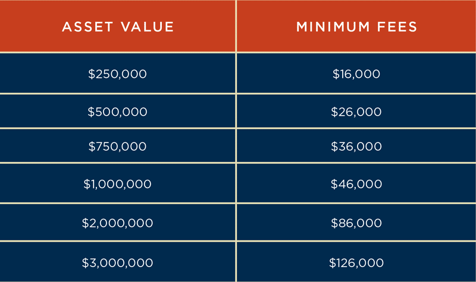

# The Cost of Probate: What to Expect
Are you curious about the expenses involved in probate? In this article, we’ll break down what you can expect to pay.
Court fees, attorney fees, appraisal costs, and executor compensation are just a few of the potential expenses you may encounter. Understanding these costs will help you navigate the probate process with confidence.
So, let’s dive in and explore the true cost of probate.
Court Fees
You will be responsible for paying court fees when going through the probate process. Court fees are the expenses that you’ll incur for filing various documents and petitions with the court during the probate proceedings. These fees can vary depending on the jurisdiction and the complexity of the estate.
Typically, you’ll need to pay fees for filing the initial probate petition, as well as additional fees for filing other necessary documents such as the inventory of assets, accountings, and petitions for distribution.
It’s important to note that these fees are separate from any attorney fees or other costs associated with the probate process.
To get an accurate estimate of the court fees you’ll be responsible for, it’s best to consult with an attorney or review the fee schedule provided by your local probate court.
Attorney Fees
Typically, attorneys will charge fees for their services throughout the probate process. Hiring an attorney can be a significant expense, but their expertise can be invaluable in navigating the complexities of probate. Here are a few things to keep in mind regarding attorney fees:
– Hourly Rate: Attorneys typically charge an hourly rate for their services. This rate can vary depending on the attorney’s experience and location. It’s important to discuss the hourly rate upfront and get a clear understanding of how much time they anticipate spending on your case.
– Flat Fee: Some attorneys may offer a flat fee for probate cases. This can be beneficial if you prefer knowing the total cost upfront. However, make sure to clarify what services are included in the flat fee and if there are any additional charges.
– Retainer: Attorneys may require a retainer fee at the beginning of the probate process. This fee is an upfront payment that’s used to cover the attorney’s work as the case progresses. Make sure to discuss the retainer fee and how it will be applied to your case.
Appraisal Costs
Appraisal costs are another expense to consider during the probate process, as they’re necessary for determining the value of the assets in the estate.
When someone passes away, their assets need to be appraised to establish their worth. This process involves hiring a professional appraiser who’ll assess the value of each asset, such as real estate, vehicles, jewelry, and artwork. The appraiser will consider factors like market conditions, age, condition, and rarity of the items.
It’s important to note that the cost of appraisal can vary depending on the complexity and size of the estate. Typically, the appraiser charges an hourly rate or a percentage of the total value of the assets being appraised.
It’s advisable to obtain multiple quotes and choose an appraiser who’s experienced and reputable to ensure accurate valuation and fair costs.
Executor Compensation
The executor’s compensation is an important aspect to consider during the probate process. As the person responsible for administering the estate, the executor is entitled to receive compensation for their time and efforts. Here are three key points to keep in mind regarding executor compensation:
– State laws: The amount of compensation that an executor is entitled to may vary depending on the state where the probate process takes place. Some states have specific guidelines or formulas to determine executor fees, while others allow for negotiation or court approval.
– Reasonable fees: Generally, executor compensation is based on a reasonable fee for the services provided. This fee is usually a percentage of the total value of the estate or a flat fee. It’s important to consult the state laws or seek professional advice to determine what’s considered reasonable in your specific situation.
– Additional expenses: In addition to the executor’s fee, they may also be reimbursed for certain out-of-pocket expenses incurred during the probate process. These expenses can include filing fees, appraiser fees, legal fees, and other necessary costs associated with administering the estate.
Understanding executor compensation is crucial to ensure fairness and transparency during the probate process. It’s important to discuss this aspect with the executor and seek professional guidance to determine a reasonable compensation arrangement.
Other Potential Expenses
You should be aware of additional expenses that may arise during the probate process. While executor compensation is an important consideration, there are other potential expenses that can impact the overall cost of probate.
One such expense is attorney fees. Hiring an attorney to navigate the legal complexities of probate is often necessary and can be a significant cost.
Additionally, there may be court fees associated with filing various documents and petitions throughout the probate process. These fees can vary depending on the jurisdiction and the specific requirements of the probate court.
Another potential expense is the cost of appraisals. Valuing the assets of the estate may require professional appraisals, which can be an additional cost.
Finally, there may be expenses related to the sale of property or the transfer of assets, such as real estate agent commissions or transfer taxes.
It’s important to factor in these potential expenses when planning for the cost of probate.
Frequently Asked Questions
Are There Any Specific Eligibility Criteria or Requirements to Be Met in Order to Qualify for Probate?
To qualify for probate, you should meet certain eligibility criteria and requirements. These vary depending on the jurisdiction you’re in, but generally, you must be the named executor in the deceased person’s will.
You may also need to file the necessary documents with the probate court, provide proof of the death, and pay any required fees.
It’s always best to consult with an attorney or seek legal advice to understand the specific requirements in your area.
What Happens if There Is a Dispute or Disagreement Among Beneficiaries Regarding the Distribution of Assets During the Probate Process?
If there’s a dispute among beneficiaries during probate, it can complicate the distribution of assets. You may need to seek legal advice to resolve the disagreement. This could involve mediation or going to court.
The cost of resolving a dispute during probate can vary depending on the complexity of the case and the time it takes to reach a resolution. It’s important to be prepared for potential legal expenses if conflicts arise during the probate process.
Is It Possible to Expedite the Probate Process in Cases Where the Estate Is Relatively Small or Straightforward?
Is it possible to expedite the probate process in cases where the estate is relatively small or straightforward?
Yes, it’s possible to expedite the probate process in such cases. By providing all the necessary documents and information promptly, working with an experienced attorney, and staying organized throughout the process, you can help ensure a smoother and quicker probate experience.
It’s important to consult with a legal professional who can guide you through the specific requirements and procedures to expedite the process successfully.
Are There Any Tax Implications or Obligations That Need to Be Considered During the Probate Process?
During the probate process, it’s important to consider any tax implications or obligations that may arise.
This includes potential estate taxes that need to be paid, as well as income taxes for the estate.
You must also be aware of any tax filing requirements and deadlines that you need to meet.
It’s recommended to consult with a tax professional who can guide you through these tax considerations and ensure compliance with the law.
Can the Probate Process Be Avoided or Bypassed Altogether Under Certain Circumstances?
Can you avoid or bypass the probate process under certain circumstances?
It’s a common question people have when dealing with the estate of a loved one. And the answer is yes, there are ways to avoid probate.
Conclusion
So, when it comes to the cost of probate, it’s important to be prepared for various expenses.
From court fees and attorney fees to appraisal costs and executor compensation, there are many factors to consider.
Additionally, there may be other potential expenses that can arise during the probate process.
By understanding and planning for these costs, you can navigate probate more smoothly and avoid any financial surprises.
undefined